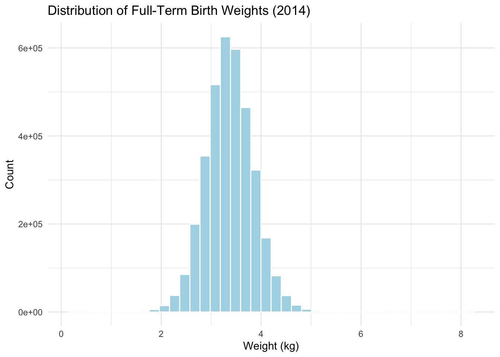
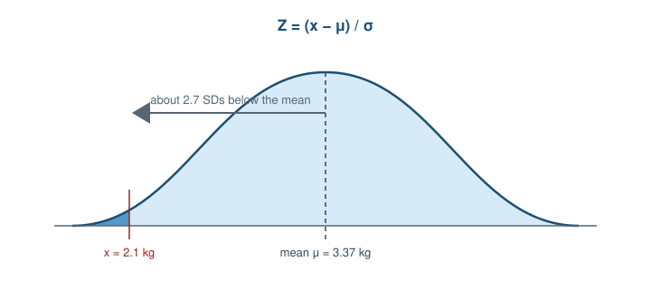
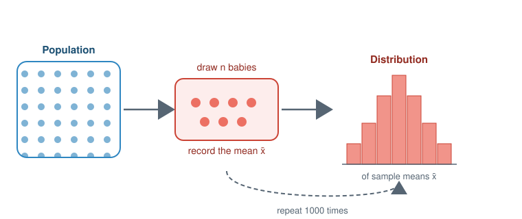
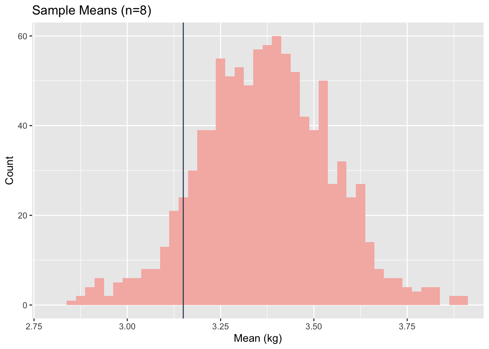
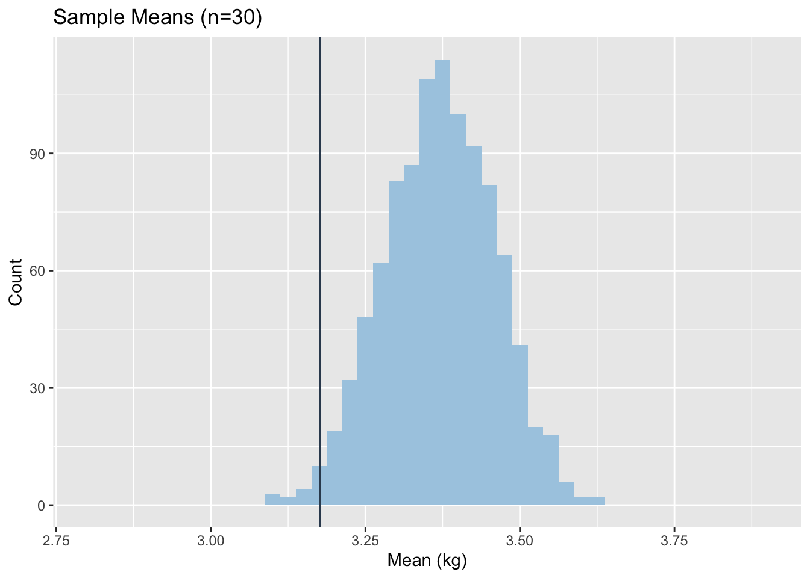
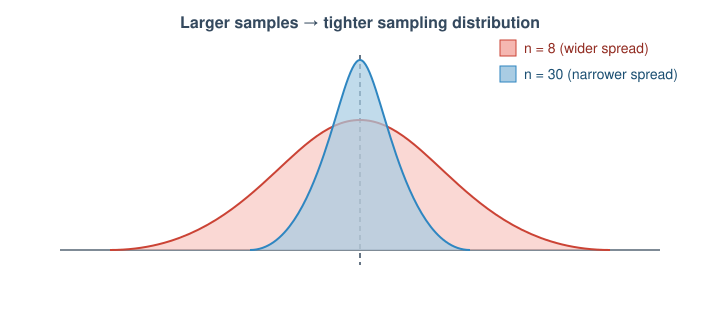

if (!require(pacman)) install.packages("pacman")
pacman::p_load(tidyverse, here, janitor)Workshop 3: Normal Distribution & Sampling Distributions (Solutions)
Introduction
Welcome to Workshop 3! In this workshop you will practice applying the concepts of the Normal Distribution, Z-scores, and Sampling Distributions using a real dataset of births in the US in 2014.
This week’s pre-work lessons covered:
- The Normal Distribution and Z-scores
- Sampling Distributions and the Central Limit Theorem
Dataset: US Births in 2014
Today we will use a dataset containing records of births in the United States in 2014. We will focus specifically on birth weight of full-term babies.
The data come from the CDC National Center for Health Statistics and cover nearly 4 million births registered across the United States in 2014. Because this is essentially every birth that year rather than a small sample, we can treat the whole dataset as our population of interest. You can read more about the source data here.
Load packages and data
For this workshop you will need the packages below. Run the chunk to load them:
Load the births_2014.csv.gz file and assign it to an object called births_raw.
births_raw <- read_csv("births_2014.csv.gz")Rows: 3998175 Columns: 8
── Column specification ────────────────────────────────────────────────────────
Delimiter: ","
dbl (8): fage, mage, weeks, premie, weight, smoker, mom_height, mom_weight
ℹ Use `spec()` to retrieve the full column specification for this data.
ℹ Specify the column types or set `show_col_types = FALSE` to quiet this message.Data Preparation
The original weight variable is in pounds. We also have a premie column where 0 means full-term and 1 means premature. Let’s filter for only full-term babies (premie == 0) and convert the weight to kilograms.
births <- births_raw %>%
filter(premie == 0) %>%
mutate(weight_kg = weight * 0.453592) %>%
drop_na(weight_kg)
head(births)# A tibble: 6 × 9
fage mage weeks premie weight smoker mom_height mom_weight weight_kg
<dbl> <dbl> <dbl> <dbl> <dbl> <dbl> <dbl> <dbl> <dbl>
1 35 29 39 0 7.05 0 NA NA 3.20
2 NA 25 38 0 6.66 1 64 180 3.02
3 22 21 39 0 8.76 0 66 230 3.97
4 NA 22 40 0 6.77 0 59 130 3.07
5 25 25 41 0 8.32 0 62 159 3.77
6 24 24 37 0 6.31 0 69 206 2.86Part 1: The Normal Distribution of Birth Weights
Before diving into individual probabilities, let’s look at the overall distribution of birth weights for full-term babies. We can plot a histogram to check for normality.
ggplot(births, aes(x = weight_kg)) +
geom_histogram(bins = 40, fill = "lightblue", color = "white") +
theme_minimal() +
labs(title = "Distribution of Full-Term Birth Weights (2014)",
x = "Weight (kg)",
y = "Count")
Q1a
Does the distribution look approximately normal (bell-shaped)?
Ans: Yes, it looks approximately normal. It has a single peak in the center and falls off symmetrically on both sides, creating a characteristic bell shape.
Since we have data for nearly all US births in 2014, we can treat this dataset as our population. Let’s calculate the population mean (\(\mu\)) and population standard deviation (\(\sigma\)).
pop_mean <- mean(births$weight_kg)
pop_sd <- sd(births$weight_kg)
pop_mean[1] 3.371838pop_sd[1] 0.4748443Note: The mean should be about 3.37 kg, and the SD about 0.47 kg.
How unusual is a low birth weight baby?
Late in a pregnancy, a doctor does an ultrasound and estimates the baby will weigh about 2.1 kg at birth. They wonder whether they should flag this as a concern. Is 2.1 kg unusually low for a full-term baby?
A z-score answers this by measuring how many standard deviations a value sits from the mean.
First, calculate the z-score for this baby. Remember the formula: \(Z = \frac{x - \mu}{\sigma}\)
z_light <- (2.1 - pop_mean) / pop_sd
z_light[1] -2.678432
Q1b
What does this z-score tell you about how far this baby’s weight is from the mean?
Ans: The z-score is approximately -2.68, which means this baby’s weight is about 2.68 standard deviations below the population mean. This is quite far from the average.
Illustration

A z-score measures how many standard deviations a value lies from the mean. Here 2.1 kg sits about 2.7 SDs into the left tail.
Next, use the pnorm() function to calculate the exact proportion of babies weighing less than 2.1 kg in a normal distribution with our population mean and SD.
prop_less_2.1 <- pnorm(q = 2.1, mean = pop_mean, sd = pop_sd)
prop_less_2.1[1] 0.003698389Because we actually have the full population data, we don’t just have to rely on pnorm(). We can directly count what proportion of babies in our dataset weighed less than 2.1 kg!
births %>%
mutate(below_2.1 = weight_kg < 2.1) %>%
tabyl(below_2.1) %>%
adorn_pct_formatting() below_2.1 n percent
FALSE 3523620 99.5%
TRUE 18293 0.5%
Q1c
How does the theoretical probability from pnorm() compare to the actual proportion we calculated from the data using tabyl()?
Ans: The theoretical probability from pnorm() is very similar to the actual proportion calculated from the data. Both indicate that about half a percent of full-term babies weigh less than 2.1 kg.
Practice: How unusual is a heavy baby?
Another expectant mother’s scan suggests her baby is tracking large, around 4.4 kg. Is that unusually heavy for a full-term baby, heavy enough that the doctor might want to prepare for a more complicated delivery? Let’s do the same calculations for a baby weighing 4.4 kg.
Calculate the z-score:
z_heavy <- (4.4 - pop_mean) / pop_sd
z_heavy[1] 2.165261Calculate the proportion of babies weighing MORE than 4.4 kg using pnorm(). Hint: pnorm() gives you the area to the left (less than). How do you find the area to the right (more than)?
prop_more_4.4 <- 1 - pnorm(q = 4.4, mean = pop_mean, sd = pop_sd)
prop_more_4.4[1] 0.01518387Verify it against the actual data using tabyl():
births %>%
mutate(above_4.4 = weight_kg > 4.4) %>%
tabyl(above_4.4) %>%
adorn_pct_formatting() above_4.4 n percent
FALSE 3478356 98.2%
TRUE 63557 1.8%Part 2: Sampling Distributions (Small Sample)
In Part 1, we asked if a single baby was unusual. But what if we want to know if a group of babies is unusual?
The key shift is that we no longer look at one baby. Instead we take a whole sample of babies from the population and summarise it with a single number: the sample mean. The distribution of this sample mean is called a sampling distribution.
Illustration

Repeatedly draw a sample, record its mean, and collect those means into their own distribution.
Illustrative hospital data (Flint-inspired scenario)
In 2014, Flint, Michigan switched its public water source, which led to a well-documented public health crisis. Researchers later linked the crisis to worse birth outcomes using CDC natality records and city-level statistical methods (for example, Wang et al., 2021).
Below, we use a small synthetic sample of weights inspired by that real-world context to illustrate the concepts of sampling distributions.
Imagine a doctor at a hospital in Flint noticed what seemed like lighter-than-usual full-term babies and pulled the weights from their last 8 full-term deliveries:
flint_small <- tibble(weight_kg = c(3.0, 3.3, 2.8, 3.7, 3.2, 3.2, 3.3, 2.7))
mean_flint_small <- mean(flint_small$weight_kg)
mean_flint_small[1] 3.15The mean of these 8 babies is 3.15 kg. This is lower than the national average of 3.37 kg.
But is it unusually low? To answer this, we need to know what kind of sample means we would get just by random chance. We can build a sampling distribution by drawing random samples of size \(n=8\) from our population over and over again, recording the mean each time.
set.seed(123) # for reproducibility
sim_data_8 <- tibble(
mean = replicate(1000, mean(sample(births$weight_kg, 8)))
)
# Plot the sampling distribution
ggplot(sim_data_8, aes(x = mean)) +
geom_histogram(binwidth = 0.025, fill = "#f5b7b1") +
geom_vline(xintercept = mean_flint_small, color = "#34495e") +
coord_cartesian(xlim = c(2.8, 3.9)) +
labs(title = "Sample Means (n=8)", x = "Mean (kg)", y = "Count")
How unusual was the doctor’s sample?
Let’s see exactly what proportion of our 1000 random samples had a mean as low as (or lower than) the hospital sample mean:
sim_data_8 %>%
mutate(below_flint = mean < mean_flint_small) %>%
tabyl(below_flint) %>%
adorn_pct_formatting() below_flint n percent
FALSE 910 91.0%
TRUE 90 9.0%
Q2a
Based on this simulation, is a sample mean of 3.15 highly unusual for a sample of 8 babies? Should the doctor be extremely worried yet?
Ans: Based on the simulation, around 10% of random samples of size 8 naturally have a mean this low or lower. While it’s on the lower side, it is not highly unusual. The doctor may not yet have enough reason to be worried based solely on this small sample of 8 babies.
Part 3: Sampling Distributions (Larger Sample)
The doctor decides to collect more data. They gather weights for 30 full-term babies in total:
flint_large <- tibble(weight_kg = c(3.0, 3.3, 2.8, 3.7, 3.2, 3.2, 3.3, 2.7,
3.1, 2.9, 3.7, 3.4, 3.5, 2.5, 3.0, 3.3,
2.0, 3.4, 3.0, 3.2, 2.7, 4.4, 3.0, 2.6,
3.6, 2.8, 3.2, 3.5, 3.4, 3.9))
mean_flint_large <- mean(flint_large$weight_kg)
mean_flint_large[1] 3.176667The new mean is roughly the same: 3.18 kg. But now the sample size is larger (\(n=30\)).
Let’s build a new sampling distribution for \(n=30\).
set.seed(123)
sim_data_30 <- tibble(
mean = replicate(1000, mean(sample(births$weight_kg, 30)))
)
# Plot the new sampling distribution
ggplot(sim_data_30, aes(x = mean)) +
geom_histogram(binwidth = 0.025, fill = "#a9cce3") +
geom_vline(xintercept = mean_flint_large, color = "#34495e") +
coord_cartesian(xlim = c(2.8, 3.9)) +
labs(title = "Sample Means (n=30)", x = "Mean (kg)", y = "Count")
Check the proportion of random samples with a mean below the hospital’s larger sample mean:
sim_data_30 %>%
mutate(below_flint = mean < mean_flint_large) %>%
tabyl(below_flint) %>%
adorn_pct_formatting() below_flint n percent
FALSE 986 98.6%
TRUE 14 1.4%
Q3a
Compare the sampling distribution for \(n=8\) and the sampling distribution for \(n=30\). What happens to the “spread” (width) of the distribution as the sample size increases?
Ans: As the sample size increases from \(n=8\) to \(n=30\), the spread (width) of the sampling distribution decreases. The sample means are clustered much more tightly around the true population mean.
Q3b
Is the hospital sample mean now considered unusually low? Why is it more unusual now even though the sample mean value barely changed?
Ans: Yes, it is now considered unusual relative to the national sampling distribution. Because the sampling distribution for \(n=30\) is much narrower, it’s significantly rarer to randomly draw a sample with a mean that is that far below the national average. What was plausible chance for 8 babies is highly unlikely for 30 babies. Remember that this is still a teaching scenario; real Flint studies used city-wide data and found more modest changes.
Illustration

Part 4: Standard Error and the t-statistic
So far, we have answered the question “is this sample mean unusually low?” by simulating many random samples from the full 2014 births dataset. That worked because, for this workshop, we have the whole population available.
In most real studies, we do not have the whole population. We might only have one sample, like the 30 hospital births. Instead of simulating thousands of samples, we can use a formula to estimate how much sample means usually vary.
That typical variation is called the Standard Error (SE). You can think of it as the standard deviation of the sampling distribution: a small SE means sample means tend to cluster tightly around the population mean; a large SE means they are more spread out.
The formula is: \(SE = \frac{\sigma}{\sqrt{n}}\)
Here, \(\sigma\) is the population standard deviation and \(n\) is the sample size.
Since we usually don’t know the population standard deviation \(\sigma\), we estimate it using our sample’s standard deviation (\(s\)).
Estimating the standard error
Calculate the estimated Standard Error for the flint_large sample (\(n=30\)):
se_flint <- sd(flint_large$weight_kg) / sqrt(30)
se_flint[1] 0.08491826From standard error to a t-score
Now we can turn the hospital’s sample mean into a t-score. This is like a z-score, but for a sample mean instead of one individual baby. It tells us how many standard errors the hospital mean is below the national mean.
Formula: \(t = \frac{\bar{x} - \mu}{SE}\)
t_score <- (mean_flint_large - pop_mean) / se_flint
t_score[1] -2.298346Getting a p-value with pt()
Finally, we use pt() to turn the t-score into a p-value. This gives us the same kind of answer as the simulation: the probability of getting a sample mean this low (or lower) by chance. For a t-distribution, we also need the degrees of freedom, which is \(n - 1\).
p_value <- pt(q = t_score, df = 30 - 1)
p_value[1] 0.01447168
Q4a
How does this mathematically calculated p-value compare to the proportion you found in your simulation in Part 3?
Ans: They are very close. The mathematically calculated p-value (around 0.014) is almost identical to the proportion we found in our simulation (around 2%).
The small remaining difference comes from the t-test relying on the sample’s standard deviation to estimate the (unknown) population standard deviation, plus the randomness in our 1000 simulated samples.
The easy way: t.test()
You don’t have to do this by hand every time. The procedure we have just gone through is equivalent to running a one-sample t-test, and R has a built-in function called t.test() that does all of this for you!
Run a one-sample t-test to see if the flint_large sample mean is significantly less than the national population mean.
t.test(flint_large$weight_kg, mu = pop_mean, alternative = "less")
One Sample t-test
data: flint_large$weight_kg
t = -2.2983, df = 29, p-value = 0.01447
alternative hypothesis: true mean is less than 3.371838
95 percent confidence interval:
-Inf 3.320954
sample estimates:
mean of x
3.176667 Examine the output.
Q4b
Do the t statistic and p-value reported by t.test() match the t_score and p_value you calculated by hand?
Ans: Yes. The t.test() output reports essentially the same t-statistic and p-value that we calculated manually. Any tiny differences are just due to rounding.
Q4c
In your own words, what do the t statistic and the p-value in this output represent?
Ans: The t-statistic tells us how many standard errors the sample mean lies below the national population mean. The p-value is the probability of seeing a sample mean this low (or lower) purely by chance if the true mean of this dataset really were the national average.
Because it is small (about 0.014), a sample mean this low would be quite unlikely under chance alone, which is evidence that this hospital sample is lighter than the national average in our exercise.
Wrap up
You’ve successfully: - Checked a population for normality and calculated probabilities with pnorm() - Standardized values using Z-scores - Simulated sampling distributions using replicate() - Demonstrated the Central Limit Theorem by comparing distributions for \(n=8\) and \(n=30\) - Calculated Standard Errors and t-statistics by hand - Run a formal one-sample t-test using t.test() - Connected the hospital example to real Flint water crisis research, while using illustrative weights for practice
Great work! Save and submit your Qmd.